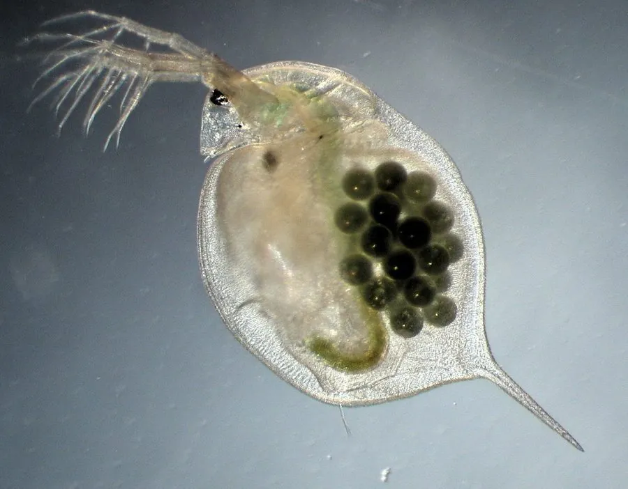

甲壳动物 · 动物界
大型溞 Daphnia magna

常见的淡水浮游枝角类，体长约 2–6 mm，以孤雌生殖快速繁殖，是鱼类开口饵料和水质监测的模式生物。
- 分类
- 门节肢动物门纲鳃足纲目双甲目科溞科属溞属
- 栖息环境
- 池塘、湖泊、水沟等静水淡水水体，常成群出现
- 地理分布
- 欧亚大陆为主的淡水水域，广泛用于实验室培养
- 保护级别
- 暂无评估
物种志
大型溞体长 2–6 mm，身体被两片透明的甲壳包裹，头部有大型复眼，第二触角发达，靠它划水跳跃，因此俗称水蚤；后端有尾刺，肠道和心脏在显微镜下清晰可见。
环境适宜时，它行孤雌生殖，雌体产出未受精卵直接发育成雌性幼体，种群可迅速指数增长；环境恶化时则产生雄体和休眠卵，休眠卵能耐受干燥与低温，等条件好转再孵化。它滤食藻类、细菌和有机碎屑，是水体中的初级消费者，也是鱼类和大型无脊椎动物的重要饵料。大型溞对污染物敏感，是国际通用的毒性测试和水质监测模式生物，被广泛培养于实验室。它分布于欧亚大陆为主的淡水水体，是淡水生态研究中最常用的物种之一。
形态与习性
- 食性滤食藻类、细菌和有机碎屑
- 体长约 2–6 mm
- 繁殖环境适宜时孤雌生殖，环境恶化时产休眠卵
- 寿命约 1–2 个月，受温度影响明显
- 生态作用鱼类饵料，水体食物链的关键环节
- 科研国际通用的毒性测试模式生物
趣味知识
- 大型溞在环境适宜时不需要交配，雌体可直接生下小水蚤。
- 环境恶化时它们会产下能耐受干燥和低温的休眠卵。
- 大型溞被广泛用于化学品毒性测试和水质监测。